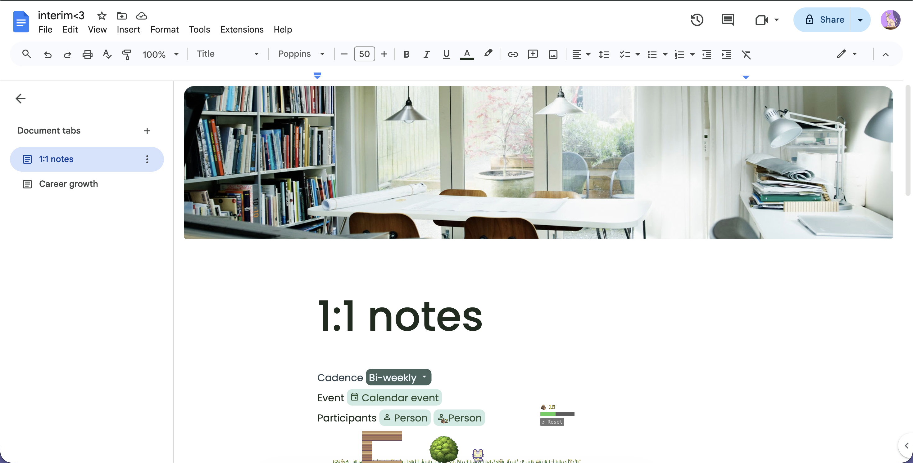
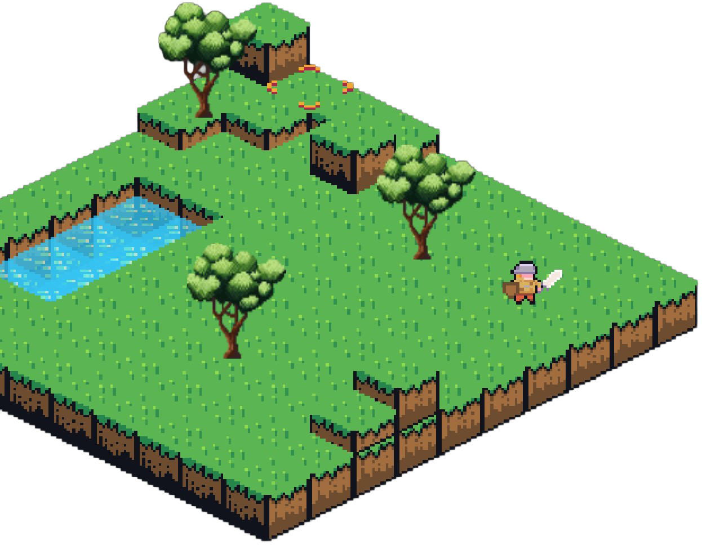
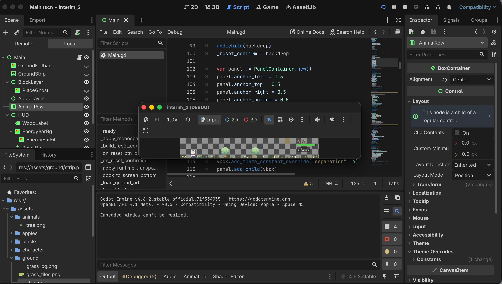

Interim
[05.12.2026]
Interim alpha demo.
Interim is a desktop idle game where players forage for materials, gather resources, and build structures over time. Unlike most games that demand constant attention, Interim is designed to quietly exist alongside your daily computer activities. The game occupies only a thin strip of space, leaving the majority of the screen free for work, studying, browsing, Zoom calls, or even waiting in another game’s queue. This compact design allows the player to stay productive while still interacting with a living digital world in the background.

The game encourages creativity through its building mechanics, giving players the freedom to design and expand their own settlements at their own pace. Rather than overwhelming the player with nonstop action, flashing notifications, or fast-paced challenges, Interim embraces the slower and more relaxing qualities of idle games. Progress happens gradually, rewarding patience and long-term planning instead of constant input. This focus on time and passive progression creates a calming experience that contrasts sharply with the overstimulating reward systems found in many modern games. Instead of pulling attention away from real-life tasks, Interim complements them, providing light engagement without becoming distracting or stressful.
The unique design of Interim is a consequence of weeks of iteration and experimentation. Originally, I wanted the game to function as an open-world sandbox experience similar to
Minecraft,
but with an isometric point of view that would allow players to build and explore from an overhead perspective. After researching the technical demands and visual style of that format, I decided to shift toward a simpler 2D front-facing design inspired by
Terraria.
While I was initially confident in this direction, my perspective changed after reading the book
Essentialism by Greg McKeown.
The book really established the power of the idea that “less is more,” which encouraged me to reconsider what elements were truly essential to the experience of playing a game.

Early iteration with the Isometric POV.
As a result, I became increasingly interested in the genre of idle games and minimalist interaction design. One of my biggest inspirations was
Tiny Pasture,
an idle game that exists in a small strip above the user’s taskbar while they continue using their computer normally. I was fascinated by how it blended into everyday computer use rather than demanding constant attention. I was also inspired by
Tamagotchi
and the idea of caring for a digital companion over time. However, I disliked the pressure and constant responsibility associated with maintaining a virtual pet, so I designed Interim to feel much more relaxed and low-commitment. The final result is a game that encourages passive creativity and gradual progression while respecting the player’s time and attention.

Developing Interim in Godot.